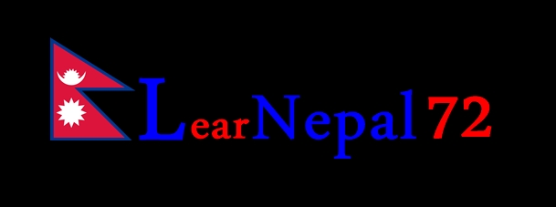

Human rights are moral principles or norms, that describe certain standards of human behavior, and are regularly protected as legal rights in municipal and international law. They are commonly understood as inalienable fundamental rights "to which a person is inherently entitled simply because she or he is a human being," and which are "inherent in all human beings" regardless of their nation, location, language, religion, ethnic origin or any other status. They are applicable everywhere and at every time in the sense of being universal, and they are egalitarian in the sense of being the same for everyone. They require empathy and the rule of law and impose an obligation on persons to respect the human rights of others. They should not be taken away except as a result of due process based on specific circumstances; for example, human rights may include freedom from unlawful imprisonment, torture, and execution.
Main article: Right to life
Every human being has the inherent right to life. This right shall be protected by law. No one shall be arbitrarily deprived of his life.
— Article 6.1 of the International Covenant on Civil and Political Rights
The right to life is the essential right that a human being has the right not to be killed by another human being. The concept of a right to life is central to debates on the issues of abortion, capital punishment, euthanasia, self defense and war. According to many human rights activists, the death penalty violates this right. The United Nations has called on states retaining the death penalty to establish a moratorium on capital punishment with a view to its abolition. States which do not do so face considerable moral and political pressure.
Main article: Torture
Throughout history, torture has been used as a method of political re-education, interrogation, punishment, and coercion. In addition to state-sponsored torture, individuals or groups may be motivated to inflict torture on others for similar reasons to those of a state; however, the motive for torture can also be for the sadistic gratification of the torturer, as in the Moors murders.
Since the mid-20th century, torture is prohibited under international law and the domestic laws of most countries. It is considered to be a violation of human rights, and is declared to be unacceptable by Article 5 of the UN Universal Declaration of Human Rights. Signatories of the Geneva Conventions of 1949 and the Additional Protocols I and II of June 8, 1977 officially agree not to torture captured persons in armed conflicts, whether international or internal. Torture is also prohibited by the United Nations Convention Against Torture, which has been ratified by 157 countries.
National and international legal prohibitions on torture derive from a consensus that torture and similar ill-treatment are immoral, as well as impractical. Despite these international conventions, organizations that monitor abuses of human rights (e.g., Amnesty International, the International Rehabilitation Council for Torture Victims) report widespread use condoned by states in many regions of the world.[79] Amnesty International estimates that at least 81 world governments currently practice torture, some of them openly.
Main article: Slavery
Freedom from slavery is internationally recognized as a human right. Article 4 of the Universal Declaration of Human Rights states:
No one shall be held in slavery or servitude; slavery and the slave trade shall be prohibited in all their forms.
Despite this, the number of slaves today is higher than at any point in history, remaining as high as 12 million to 27 million, Most are debt slaves, largely in South Asia, who are under debt bondage incurred by lenders, sometimes even for generations. Human trafficking is primarily for prostituting women and children into sex industries.
Groups such as the American Anti-Slavery Group, Anti-Slavery International, Free the Slaves, the Anti-Slavery Society, and the Norwegian Anti-Slavery Society continue to campaign to rid the world of slavery.
Main article: Right to a fair trial
Everyone is entitled in full equality to a fair and public hearing by an independent and impartial tribunal, in the determination of his rights and obligations and of any criminal charge against him.[89]
The right to a fair trial has been defined in numerous regional and international human rights instruments. It is one of the most extensive human rights and all international human rights instruments enshrine it in more than one article. The right to a fair trial is one of the most litigated human rights and substantial case law has been established on the interpretation of this human right. Despite variations in wording and placement of the various fair trial rights, international human rights instrument define the right to a fair trial in broadly the same terms. The aim of the right is to ensure the proper administration of justice. As a minimum the right to fair trial includes the following fair trial rights in civil and criminal proceedings.
Main article: Freedom of speech
Freedom of speech is the freedom to speak freely without censorship. The term freedom of expression is sometimes used synonymously, but includes any act of seeking, receiving and imparting information or ideas, regardless of the medium used. In practice, the right to freedom of speech is not absolute in any country and the right is commonly subject to limitations, such as on libel, slander, obscenity, incitement to commit a crime, etc. The right to freedom of expression is recognized as a human right under Article 19 of the Universal Declaration of Human Rights and recognized in international human rights law in the International Covenant on Civil and Political Rights (ICCPR). Article 19 of the ICCPR states that "everyone shall have the right to hold opinions without interference" and "everyone shall have the right to freedom of expression; this right shall include freedom to seek, receive and impart information and ideas of all kinds, regardless of frontiers, either orally, in writing or in print, in the form of art, or through any other media of his choice".
Main articles: Freedom of thought, Conscience and Freedom of religion
Everyone has the right to freedom of thought, conscience and religion; this right includes freedom to change his religion or belief, and freedom, either alone or in community with others and in public or private, to manifest his religion or belief in teaching, practice, worship and observance.
Freedom of thought, conscience and religion are closely related rights that protect the freedom of an individual or community, in public or private, to think and freely hold conscientious beliefs and to manifest religion or belief in teaching, practice, worship, and observance; the concept is generally recognized also to include the freedom to change religion or not to follow any religion. The freedom to leave or discontinue membership in a religion or religious group—in religious terms called "apostasy"—is also a fundamental part of religious freedom, covered by Article 18 of the Universal Declaration of Human Rights.
Human rights groups such as Amnesty International organizes campaigns to protect those arrested and or incarcerated as a prisoner of conscience because of their conscientious beliefs, particularly concerning intellectual, political and artistic freedom of expression and association. In legislation, a conscience clause is a provision in a statute that excuses a health professional from complying with the law (for example legalizing surgical or pharmaceutical abortion) if it is incompatible with religious or conscientious beliefs.
Main article: Freedom of movement
Freedom of movement asserts that a citizen of a state in which that citizen is present has the liberty to travel, reside in, and/or work in any part of the state where one pleases within the limits of respect for the liberty and rights of others, and to leave that state and return at any time.
Events and new possibilities can affect existing rights or require new ones. Advances of technology, medicine, and philosophy constantly challenge the status quo of human rights thinking.
Main article: Right to keep and bear arms
The right to keep and bear arms for defense is described in the philosophical and political writings of Aristotle, Cicero, John Locke, Machiavelli, the English Whigs and others.[98] In countries with an English common law tradition, a long-standing common law right to keep and bear arms has long been recognized, as pre-existing in common law, prior even to the existence of national constitutions.[99]
In 1997, UNESCO adopted the Declaration on the Responsibilities of the Present Generation towards the Future Generation. The Declaration opens with the words:
Mindful of the will of the peoples, set out solemnly in the Charter of the United Nations, to 'save succeeding generations from the scourge of war' and to safeguard the values and principles enshrined in the Universal Declaration of Human Rights, and all other relevant instruments of international law.
— Declaration on the Responsibilities of the Present Generation towards the Future Generation
Article 1 of the declaration states "the present generations have the responsibility of ensuring that the needs and interests of present and future generations are fully safeguarded." The preamble to the declaration states that "at this point in history, the very existence of humankind and its environment are threatened" and the declaration covers a variety of issues including protection of the environment, the human genome, biodiversity, cultural heritage, peace, development, and education. The preamble recalls that the responsibilities of the present generations towards future generations has been referred to in various international instruments, including the Convention for the Protection of the World Cultural and Natural Heritage (UNESCO 1972), the United Nations Framework Convention on Climate Change and the Convention on Biological Diversity (Rio de Janeiro, 1992), the Rio Declaration on Environment and Development (UN Conference on Environment and Development, 1992), the Vienna Declaration and Programme of Action (World Conference on Human Rights, 1993) and a number of UN General Assembly resolutions relating to the protection of the global climate for present and future generations adopted since 1990.